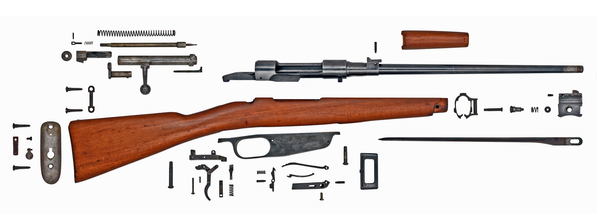

Carcano

Assemble/Disassemble
National Origin: Italy
Cartridge: 6.5×52mm Carcano, 7.35×51mm Carcano, 6.5×54mm Mannlicher–Schönauer, 7.92×57mm Mauser, 6.5×50mm Arisaka (Type I)
Feed System: 6-round internal magazine w/ en-bloc clips
Action: Bolt action, cock-on-opening
The Carcano rifle is most (in)famous for being the weapon that Lee Harvey Oswald used in the 1963 assassination of President John F. Kennedy. Adopted in 1891 by Italy, it also saw German and Finnish service during World War II, as well as in Italy's various imperial ambitions in Africa. As a direct consequence of the latter, Carcano rifles have been sighted in the hands of rebels in the ongoing Libyan Civil War.
 Back
Back